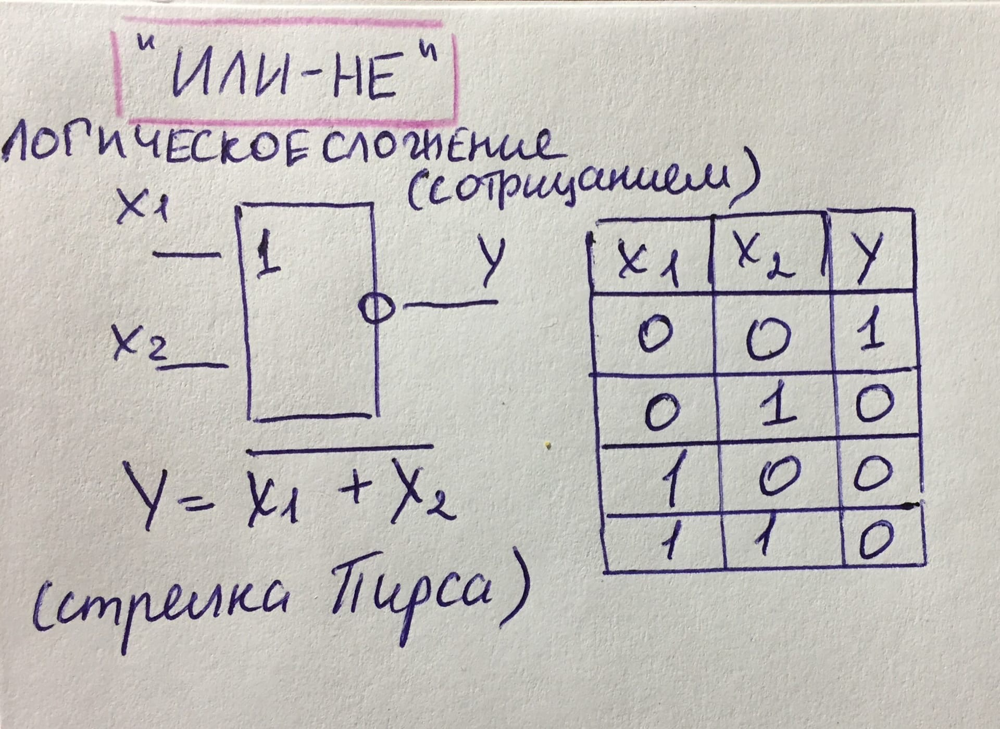

Логический элемент ИЛИ-НЕ
Таблица истинности логического элемента ИЛИ-НЕ

Структурная схема логического элемента ИЛИ-НЕ,
представленная в учебном материале Валерия Леонидовича ШАТУНОВСКОГО http://shat307.ru/_els19/index.html